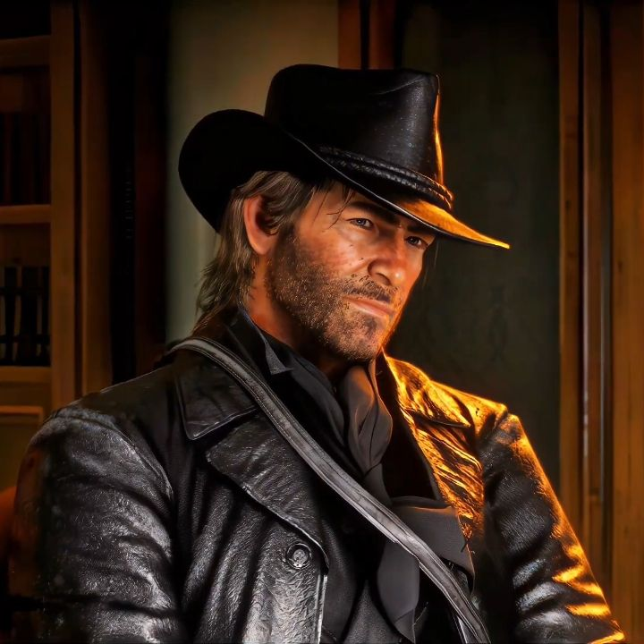
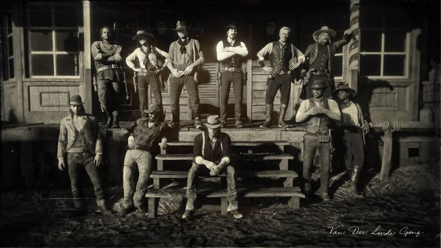

Сюжет гри
Події Red Dead Redemption 2 відбуваються наприкінці епохи Дикого Заходу. Гравець керує Артуром Морганом, який є одним із найнадійніших членів банди Ван дер Лінде, яка постійно тікає від закону та намагається вижити у світі, що швидко змінюється. Спочатку Артур сліпо підтримує свого ватажка, але поступово починає сумніватися у виборі банди та переосмислювати власні вчинки. Саме тому його історія сприймається як справжня драма про помилки, вірність, втрати та можливість спокути.
Відкритий світ
Відкритий світ Red Dead Redemption 2 складається з міст, маленьких поселень, лісів, гір, боліт і пустель, і кожна локація має власну атмосферу. Гравець може подорожувати верхи, полювати, рибалити, досліджувати незнайомі місця та випадково зустрічати NPC зі своїми проблемами й історіями. На світ також впливають погода, час доби та вчинки Артура. Завдяки цій кількості деталей гра здається живою, а не просто красивою декорацією.
Головні особливості гри
- Сильна драматична історія та розвиток персонажів.
- Великий відкритий світ із містами, природою та випадковими подіями.
- Система честі, яка показує наслідки рішень Артура.

